Há 22 anos a Galleon fornece as melhores soluções para obras de
pré-fabricados em concreto. Da fundação a cobertura, todos os produtos são projetados de forma
customizada para garantir máxima funcionalidade e tranquilidade na execução da obra.
FUNDAÇÕES
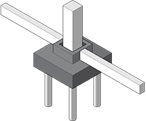
As fundações são moldadas in loco e definidas especificamente para
cada obra,
avaliando-se criteriosamente as condições do solo (sondagem) e as cargas dos pilares. Podem ser utilizados
sapatas ou blocos apoiados sobre estadas/tubulações.
PILARES
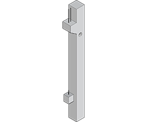
Os pilares podem ser produzidos em seções quadradas ou retangulares,
sendo maciços ou
com condutores internos para escoamento de água pluvial proveniente da cobertura. Podem receber consoles em
qualquer posição para apoio de vigas para lajes e também podem ser preparados com sistema de para-raios.
VIGAS DE MEZANINO
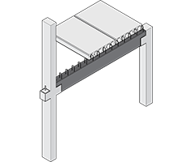
As vigas são produzidas em concreto armado ou protendido, com seção
retangular ou em
“I”. Possuem a função de receber as lajes e/ou alvenarias dos mezaninos. Servem também para criar vãos para
portas, portões, janelas, etc.
VIGAS DE COBERTURA
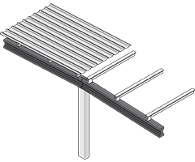
As vigas de cobertura são confeccionadas em concreto armado e
protendido, atendendo aos
mais variados vãos livres de cobertura. Podem ser do tipo “I” ou “T”.
TERÇAS PROTENDIDAS
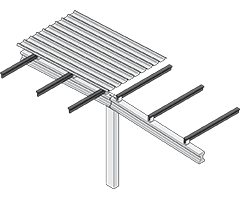
Produzidas em concreto protendido, são apoiadas nas vigas de cobertura e recebem
telhas
de diversos tipos. Podem ter até 12,5 metros de vão livre.
CALHAS DE CONCRETO
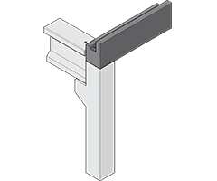
As calhas de concreto são utilizadas para captação de água proveniente da
cobertura.
Podem ter alturas variadas, sendo também utilizadas como platibandas, conferindo à obra um acabamento
elegante.
LAJES ALVEOLARES
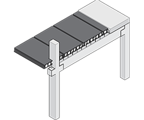
São produzidas em concreto protendido alveolar, em painéis de 1,25 metros de
largura,
com capacidade para vencer grandes vãos e sobrecargas. Não necessitam de escoramento, garantindo um menor
tempo de construção.
ESCADAS
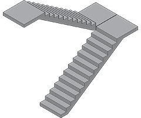
A escada pré-fabricada é uma solução que otimiza o tempo da construção, pois
elimina
um
item de grande dificuldade quando construída no modo convencional.
VIGAS DE PONTE ROLANTE
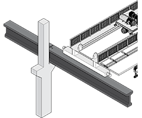
São produzidas em seções retangulares ou em “I”, podendo ser armadas ou
protendidas.
Suas
dimensões atendem a grandes sobrecargas e vãos. Em concreto pré-fabricado, reduzem os custos de manutenção
quando comparados às metálicas.
PAINÉIS DE FECHAMENTO
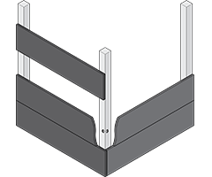
Produzidos em concreto maciço, substituem a alvenaria com grande vantagem na
rapidez,
qualidade, estanqueidade e durabilidade. Podem ser dimensionadas de maneira a se adaptarem às aberturas
(janelas, portas) de qualquer projeto.
GARAGENS
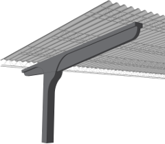
Produzidas em concreto armado, possuem design arquitetônico agradável e garantem
maior
espaço para manobra, devido aos grandes vãos proporcionados. Sua manutenção é zero, pois sua estrutura é
composta por pilares e vigas em concreto, terças metálicas galvanizadas a fogo e telhas em CRFS. Podem cobrir
até 13 vagas com 3 pilares.